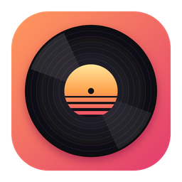

Sempre in primo piano e nei colori della copertina
Il verso in corso fluttua sopra ogni finestra e si illumina nel colore dominante della copertina, con passaggi morbidi da una riga all’altra e anteprima delle pause strumentali.

MySpotifyMySpotify / Testi sul desktop
TESTI SUL DESKTOP · MACOS E WINDOWS
L’app desktop ufficiale di Spotify non ha ancora una sovrapposizione con i testi fluttuanti sul desktop. MySpotify la integra in modo nativo in un client leggero in Go per macOS e Windows, con evidenziazione nei colori della copertina, blocco trasparente ai clic e testi di riserva da LRCLIB e NetEase.
FUNZIONI
Il verso in corso fluttua sopra ogni finestra e si illumina nel colore dominante della copertina, con passaggi morbidi da una riga all’altra e anteprima delle pause strumentali.
Blocca la sovrapposizione così i clic del mouse passano dritti al tuo editor o al browser. Su Windows resta senza bordo e senza ombra; se vuoi, si nasconde da sola quando metti in pausa.
Quando Spotify non ha i testi o mancano i tempi, MySpotify interroga LRCLIB e NetEase Cloud Music, controllando con rigore titolo e durata del brano per evitare versioni sbagliate.
In Impostazioni › Testi sul desktop scegli se la seconda riga mostra il verso successivo o, quando c’è, la traduzione in cinese, oltre a dimensioni e colori del testo personalizzabili.
Attiva i testi sul desktop dalla barra del player, dal menu Dock o Controlli di macOS, dall’area di notifica di Windows o con una scorciatoia da tastiera globale che vale in qualsiasi app.
Tieni visibili i testi sincronizzati sotto i video musicali a finestra intera o a schermo intero, e premi [ / ] per spostare il tempo di 0,5 s per brano se un video ha un’introduzione diversa.
COME SI USA
Riproduci un brano qualsiasi in MySpotify e fai clic sul pulsante Testi sul desktop nella barra in basso (oppure usa il menu del Dock o dell’area di notifica).
Passa con il mouse sulla barra fluttuante per trascinarla dove vuoi o cambiare brano. In Impostazioni › Testi sul desktop regoli dimensione e colori del testo, la modalità della seconda riga, la scorciatoia globale e Nascondi in pausa.
Fai clic sul lucchetto così la sovrapposizione non ruba mai il focus e non blocca i clic. Più tardi, passandoci sopra con il mouse, compare il pulsante di sblocco.
Le ricerche dei testi di riserva inviano a LRCLIB o a NetEase solo titolo, artista, album e durata del brano, mai le credenziali del tuo account né la tua cronologia di ascolto.
DOMANDE FREQUENTI
MySpotify include una sovrapposizione nativa, sempre in primo piano, per i testi sul desktop, su macOS e su Windows, senza plugin aggiuntivi. Fai clic su Testi sul desktop nella barra del player, usa il menu dell’area di notifica o del Dock, oppure assegna una scorciatoia globale in Impostazioni › Testi sul desktop.
No. Una volta bloccati, i clic attraversano i testi e arrivano alla finestra sottostante. Su Windows i testi bloccati sono senza bordo e senza ombra, e passandoci sopra compare solo il pulsante di sblocco. Puoi anche attivare Nascondi in pausa.
MySpotify passa automaticamente a NetEase Cloud Music e a LRCLIB, preferendo i testi con i tempi e confrontando sia il titolo sia la durata del brano, così non vengono mai abbinate cover o versioni dal vivo sbagliate.
Sì. Premi [ o ] durante un video musicale per anticipare o ritardare i testi di 0,5 secondi alla volta. Lo scarto viene salvato per ogni brano.